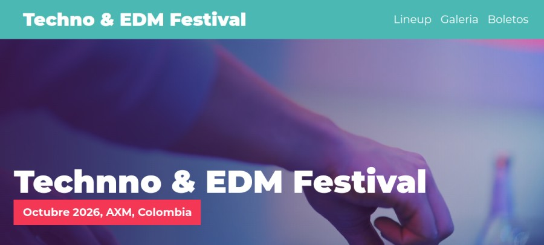
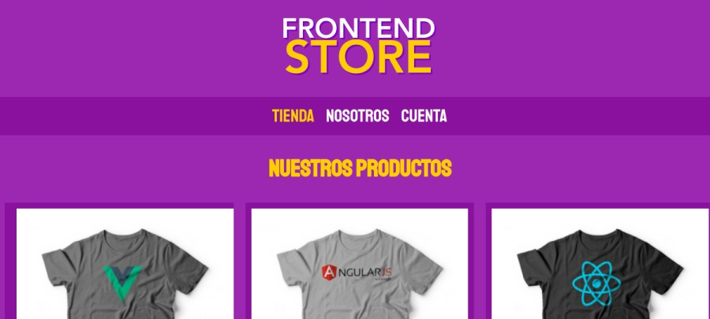
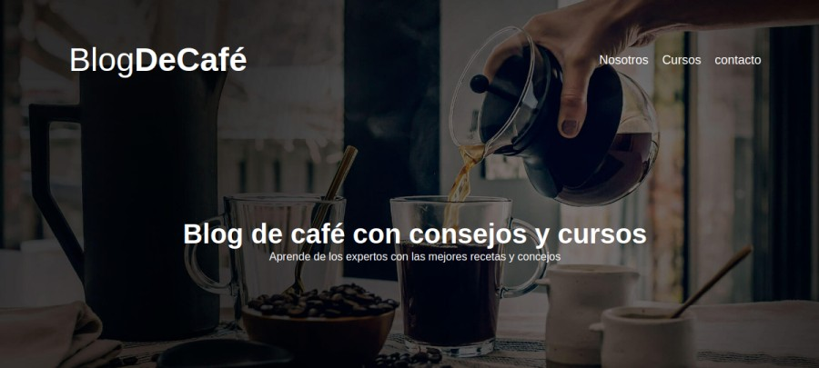
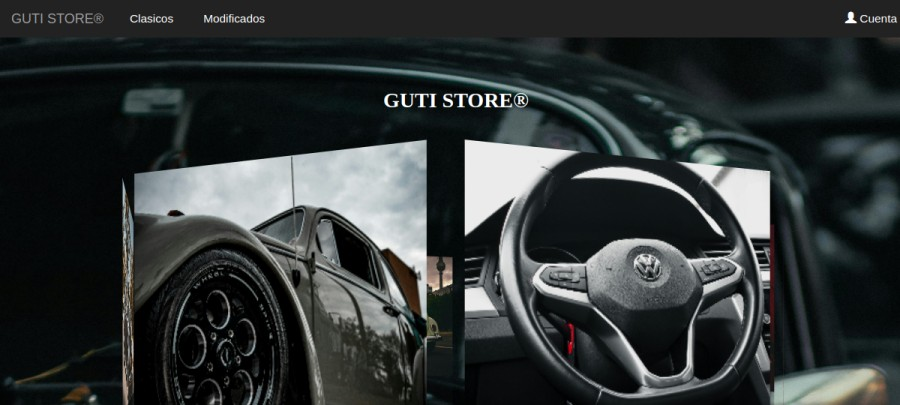

Disponible para oportunidades
Hola, soy
Juan José.
Estudiante de Ingeniería de Software
Desarrollo frontend y proyectos web.
Creo sitios web y herramientas pequeñas para resolver necesidades concretas. Aquí puedes conocer mis proyectos, formación y experiencia.
PORTAFOLIO / 2026 Código con intención.
Código con intención.
Diseño con propósito.
{ creatividad }HTML · CSS · JS · PYTHON
✳✳
Código con intención.Diseño con propósito.
Proyectos que
me representan.
Proyectos personales y académicos donde practico desarrollo web, interfaces, interacción y programación con Python.




Aplicación de consola
GUTISTORE · Calculadora
Calcula subtotal, descuento y total en COP; valida los datos ingresados y usa Decimal para operaciones monetarias.
PythonDecimalValidación
¿Quieres explorar más?Ver mis repositorios en GitHub
Experiencia
profesional.
Mi recorrido combina desarrollo frontend con atención al cliente, ventas y operación de inventarios.
ENE 2026 — ACTUALIDAD
Desarrollador frontend independiente
Logic Metric · Remoto
Desarrollo frontend y trabajo con JavaScript, HTML, CSS, React, Node.js, Python y Git.
FEB 2025 — FEB 2026
Asesor externo
FACMAC S.A.S.
Atención al cliente, ventas, seguimiento comercial y apoyo en la administración de tienda por temporada.
SEP 2021 — ENE 2023
Encargado de almacén
Gestión Logística SyM S.A.S.
Control de inventario, recepción y despacho de mercancía, manejo de archivo y apoyo a ventas.
Aprender.
Construir.
Compartir.
Estudio Ingeniería de Software y desarrollo proyectos web y herramientas en Python. Mi experiencia en servicio al cliente, ventas y logística también me aporta organización, comunicación y seguimiento.
Explorar mi GitHubFORMACIÓN
Ingeniería de Software
Corporación Universitaria Iberoamericana · 2022 — Actualidad
Tecnólogo en Gestión Empresarial
SENA · 2018 — 2020
TECNOLOGÍAS
JavaScriptHTML5CSS3PythonJavaLaravelPower BIGitNode.jsReact
APRENDIZAJE ACTUAL
Frontend y backend web
Fortaleciendo React y los fundamentos de backend con Node.js.
Disponible para oportunidades junior, colaboraciones y proyectos freelance.
¿Creamos algo
bueno juntos?
Estoy abierto a oportunidades junior, colaboraciones y proyectos freelance. Si quieres conversar, escríbeme.
juanjose200013@gmail.com